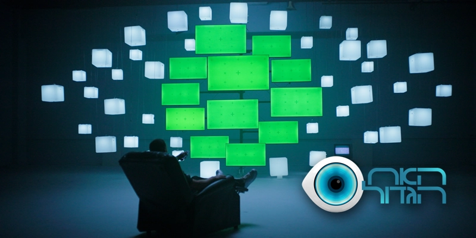

Skip to main content
Ma
Home
About
Projects
Skills & Links
Contact

BIG BROTHER
| VFX BREAKDOWN
Client
Endemol | Reshet 13
Category
Visual Effects
Year
2025
Your browser does not support the video tag.
Process & Variations
Screen Replacement
💡
Hover or drag the slider to compare before and after
Color Grading
💡
Hover or drag the slider to compare before and after
Final Composite
💡
Hover or drag the slider to compare before and after
Related Projects
8200
Survivor